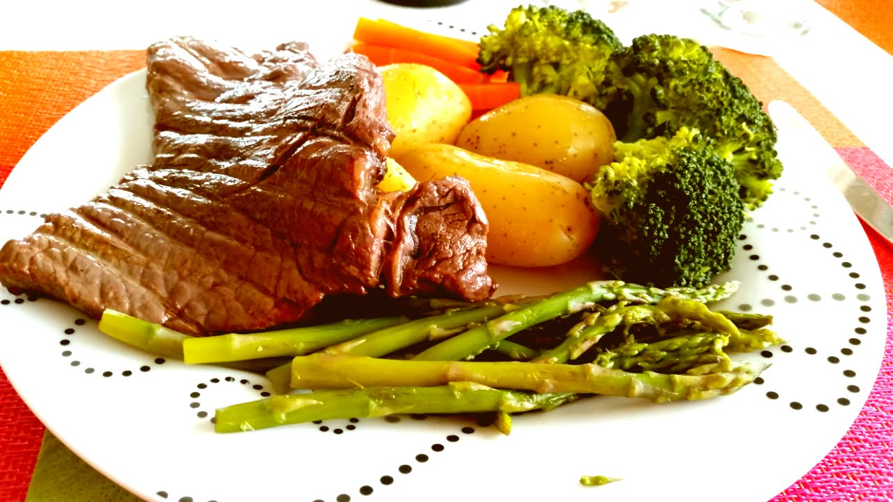

Steak and boiled vegetables

Description
This is a good, tasty and healthy recipe that is quick and simple to cook.
Ingredients
- Steak
- Oil or tallow
- Salt and pepper
- Vegetables of choice
Steps
- Wash and chop up vegetables
- Bring a saucepan of water to the boil
- Whilst the water is heating up, heat up the frying pan with oil in it
- Add the vegetables to the boiling water, and boil for 4-6 minutes
- Season the steak, and rub it in with oil before adding it to the frying pan.
Fry for 5-7 minutes for medium rare, depending on the thickness of the steak.